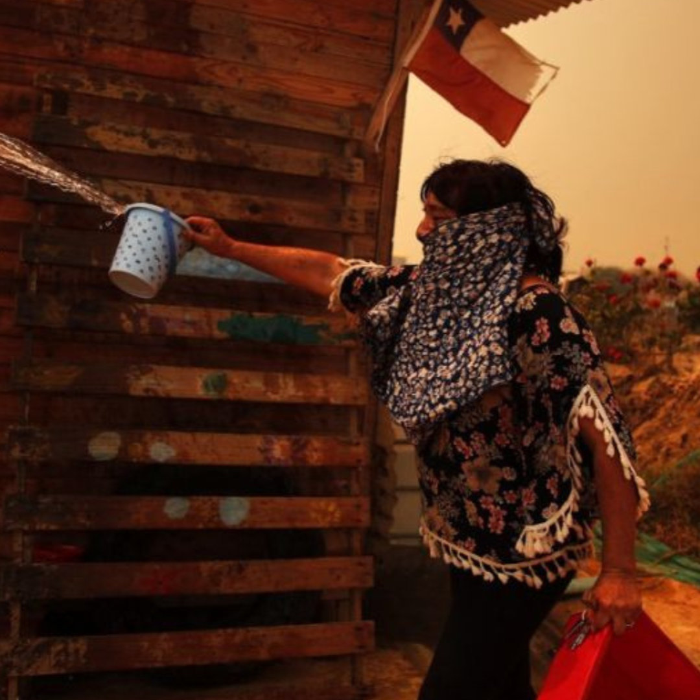
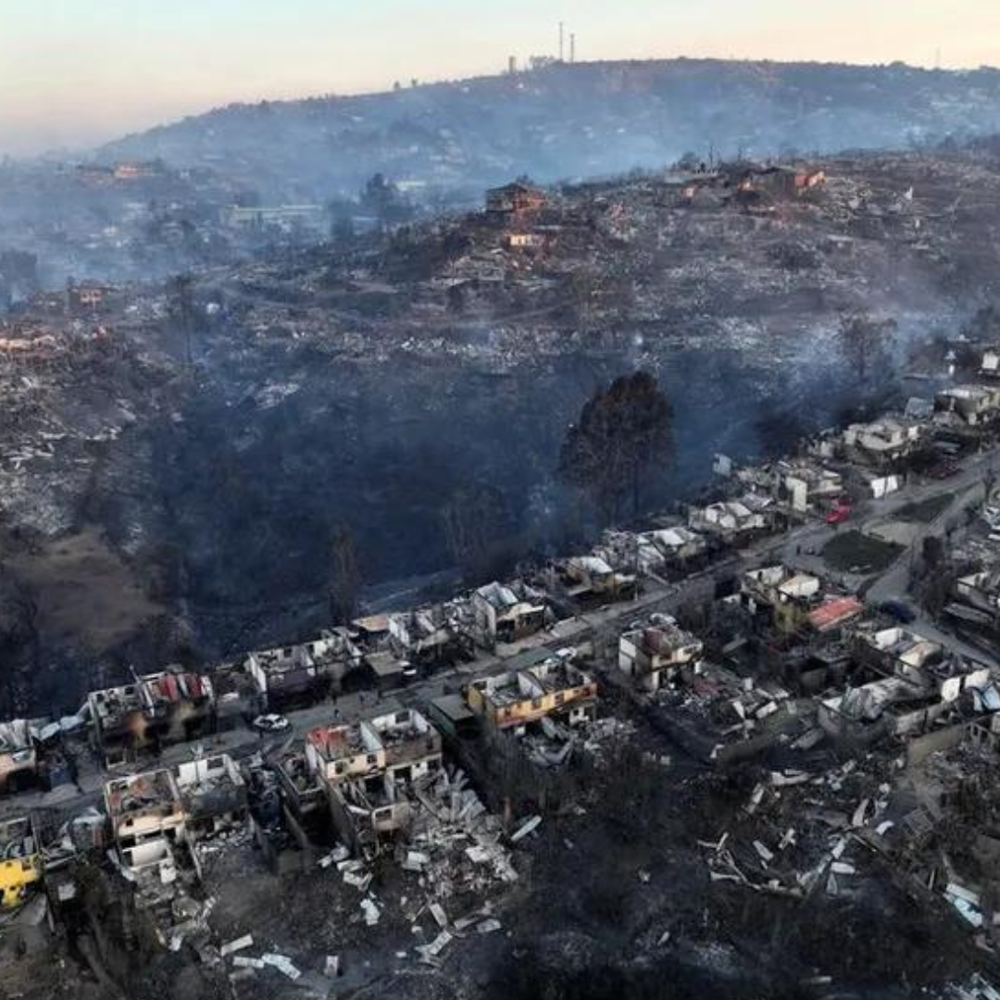
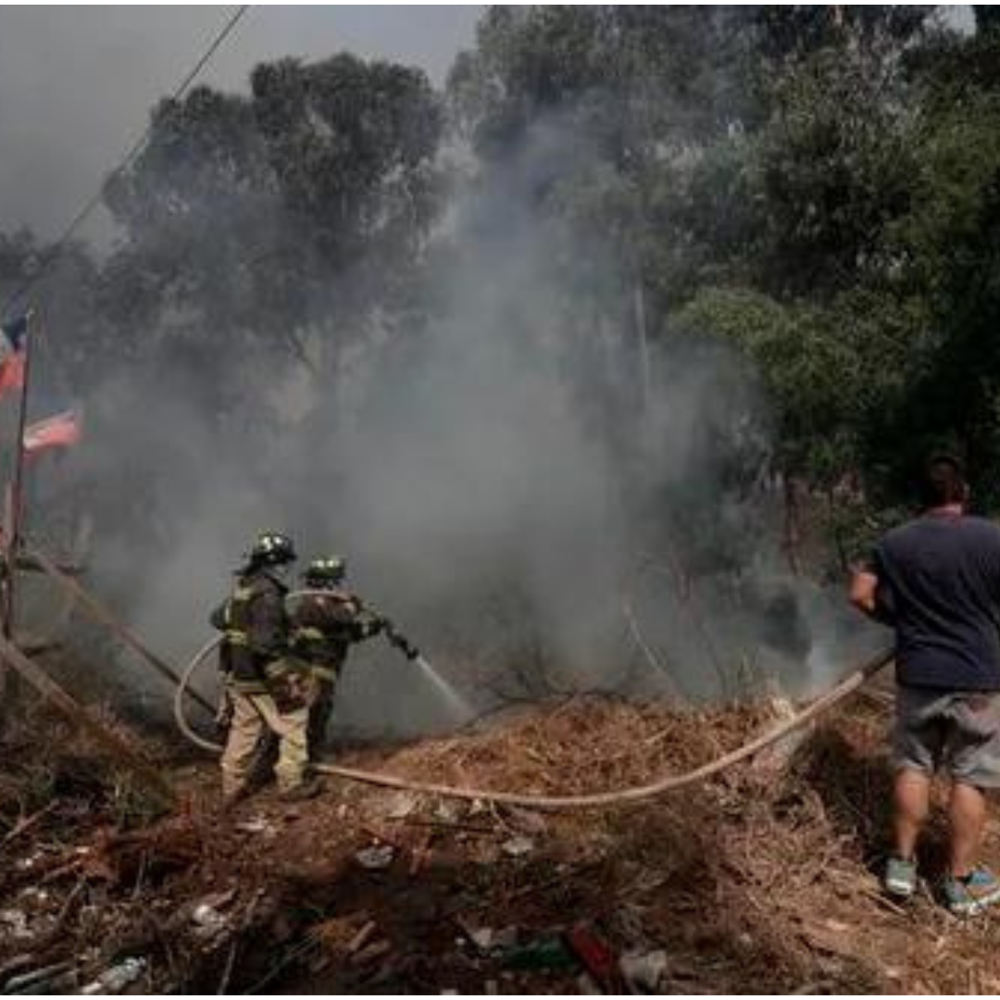

Mini noticias
Ha sido calificada como una de las tragedias más grandes que Chile ha vivido en las últimas décadas. Con más de 120 personas muertas y alrededor de 15.000 viviendas afectadas, el incendio que azotó a la región de Valparaíso tiene al país sudamericano consternado.
  En dos de las ciudades más golpeadas, Viña del Mar y Quilpué ubicadas a unos 120 kilómetros de la capital Santiago- , villas enteras quedaron hechas cenizas. Cientos de personas perdieron sus casas y ahora intentan recuperar entre los escombros algunas de sus pertenencias.
Más InformaciónInformación sobre cómo las personas pueden contribuir a la causa.
Esta semana como devastadores desastres naturales han afectados a zonas del norte y del sur de Chile. Un temporal en lugares como Copiapó donde nunca llueve y que tiene a muchos sin casa; y sequía e incendios forestales en lugares patrimoniales como China Muerta y Conguillío donde se están quemando incluso araucarias algunas de las formas de ayudar al norte y al sur de Chile que hemos encontrado en redes sociales; si conocen otras formas
La Cruz Roja Chilena habilitó la cuenta corriente N° 29-22-22
Banco Estado Rut 70.512.100-1 finanzas@cruzroja.cl